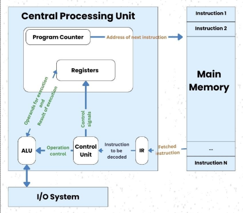
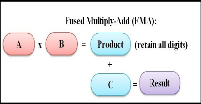

Why Accelerators Exist
The CPU baseline
The machine you already know

- The von Neumann loop: fetch → decode → execute (→ memory access → write back)
- Fetch the next instruction from memory, decode what it asks for, execute it, repeat — billions of times per second
- One core = one instruction stream, executed in program order (as far as you can tell)
- The contract a CPU offers: run any program — branchy, pointer-chasing, unpredictable — as fast as possible
Where the transistors actually go
A modern CPU core is mostly not arithmetic. The ALU is a sliver; the rest is machinery for keeping that one instruction stream moving:
- Branch prediction — guess which way an
ifgoes before it resolves; speculate past it (~95%+ accuracy) - Out-of-order execution — hundreds of instructions in flight, reordered around stalls, retired in order
- Deep cache hierarchy — L1 → L2 → L3, most of the chip's area, betting that data just used will be used again
- Prefetching, register renaming, speculation — all in service of latency: finish this one stream sooner
The unifying idea: arithmetic takes ~1 cycle, but a trip to DRAM takes ~300. A core is a machine for hiding latency in a single instruction stream — every feature below is a different trick for the same goal.
Branch prediction
- Intuition: reading a choose-your-own-adventure aloud, but the page saying which fork to take arrives late. Don't wait — notice the story went left 47 of the last 50 times, guess left, keep reading. Wrong guess → tear up the notes, go back.
- The pipeline fetches instructions many cycles before an
ifresolves; the predictor keeps history tables ("what did this branch do recently, given the path that led here?"). Loops and structured code predict at 98–99%+ - A wrong guess flushes everything fetched after the branch: ~15–20 cycles lost
- Cost model: extra cycles/instruction = (branch fraction) × (miss rate) × (flush penalty). E.g. 0.20 × 0.05 × 15 ≈ 0.15 cycles per instruction — a huge tax on a core aiming for 4 instructions/cycle
- Why accuracy must be extreme, not just good: speculating past 20 branches at 95% each → 0.95²⁰ ≈ 36% chance all were right; at 99% → 82%
Out-of-order execution & register renaming
- Intuition: a cook who hits "wait for the dough to rise" doesn't stop — they look ahead and chop the onions now, as long as the dish comes together as if the recipe order was followed
- Instructions enter a reorder buffer (~300–600 entries) in program order; any instruction whose inputs are ready executes, regardless of position; results retire in order, so the illusion of sequential execution holds — which is also what makes speculation safe to undo
- Register renaming removes false dependencies: 16 architectural names (
rax, …) are aliases onto ~300 physical registers, so two writes to "rax" become independent values, not a collision - Why the window is so big: to hide an L-cycle miss on a W-wide core you need ~W × L independent instructions in flight — 4 × 300 ≈ 1200, more than even today's windows. A DRAM miss still hurts
Cache hierarchy
- Intuition: desk (L1) → drawer (L2) → filing cabinet (L3) → warehouse (DRAM). Whatever you just used stays on the desk, because you'll likely need it again in a moment
- The hierarchy is a bet on two empirical properties of real programs:
- Temporal locality — data touched now will be touched again soon (loop variables, hot structures)
- Spatial locality — data near it will be touched too; caches move 64-byte lines, not bytes, precisely for this
- The bet pays off so often that over half the die is SRAM

Prefetching
- Intuition: the librarian who sees you request volumes 3, 4, 5 — and fetches 6 and 7 before you ask
- Hardware watches the address stream; a constant stride (array traversal) is detected within a few accesses and loads are issued several steps ahead — the miss isn't faster, it's started earlier, overlapped with useful work
- This is why linear array scans run near full speed while pointer-chasing (linked lists, trees) crawls: no pattern → every hop eats the full latency, serialized
💬 Quick check
Roughly what fraction of a modern CPU core's silicon does actual arithmetic?
Answer
- A few percent. The overwhelming majority is control, prediction, and cache — overhead for keeping one stream fed.
- Corollary: for a workload that doesn't need the machinery, almost the whole transistor budget is wasted.
The memory wall
- The numbers that define computing:
- Arithmetic: a fused multiply-add costs ~1 cycle
- L1 cache hit: ~4 cycles
- L2: ~12
- L3: ~40
- Main memory (DRAM): ~200–400 cycles
- One cache miss = hundreds of potential arithmetic operations forfeited
- How well does the hierarchy paper over this? Average memory access time nests across levels:
AMAT = t_L1 + m_L1 · (t_L2 + m_L2 · (t_L3 + m_L3 · t_DRAM))- With hit rates 95% / 80% / 60%:
4 + 0.05·(12 + 0.20·(40 + 0.40·300)) ≈6 cycles — vs 300 with no caches, a ~50× win from betting on locality
- The gap has widened for 30 years: compute (FLOPs) has scaled far faster than memory bandwidth
- Transistors got smaller and faster; wires to off-chip DRAM did not keep pace
- Consequence: moving bytes, not multiplying them, is the bottleneck
- Caches, prediction, out-of-order — the whole CPU design — are all responses to the memory wall for irregular programs
- Keep this fact in view all module: the GPU will need a different answer to the same wall
The workload: what does ML actually ask for?
It's matmul all the way down
- Nearly everything in a neural network is (or reduces to) a matrix multiplication:
- Linear / fully-connected layers — literally
X @ W - Attention — Q·Kᵀ and scores·V are both matmuls
- Convolutions — unrolled (im2col) into matmuls
- Linear / fully-connected layers — literally
- Training and inference alike: the same matmuls, run millions of times
- Everything that isn't matmul (softmax, LayerNorm, activations) is tiny by FLOP count — it will matter later, but for a different reason
Anatomy of one matmul

C[i,j] = Σₖ A[i,k] · B[k,j]
- Each output element
C[i,j]= one dot product = a chain of fused multiply-adds (FMA:acc += a·b, ~1 cycle) - Count the work: multiplying two 4096×4096 matrices = 4096³ ≈ 69 billion FMAs — for one layer of one forward pass
The three properties that change everything
- Independent —
C[i,j]never needs any other output element; all ~17 million outputs could be computed simultaneously - Identical — every output runs the same instruction sequence, only on different data
- Regular — memory access follows a predictable pattern known before the program runs; nothing to predict, nothing to speculate
Now look back at the CPU
- Branch prediction? There are no branches.
- Out-of-order machinery? There is no dependency chain to reorder around.
- Deep speculative pipeline? The access pattern is known in advance.
- Almost every transistor the CPU spent on making one stream fast is useless overhead for this workload
💬 Design exercise
You get the same transistor budget as a CPU. The workload is billions of independent, identical, regular FMAs — nothing else. What hardware would you build?
Answer
- Rip out prediction, reordering, speculation — spend nearly everything on arithmetic units
- Every operation is identical → one instruction decoder can drive many ALUs in lockstep
- Independence → no need for any single unit to be fast; you win on width
- This is, roughly, a GPU. But before meeting it, next lecture we build each of its tricks by hand, on a CPU — and measure what every one is worth.
References
- Vijay Janapa Reddi, Machine Learning Systems — Ch 11: AI Acceleration (§§ 11.2–11.4)